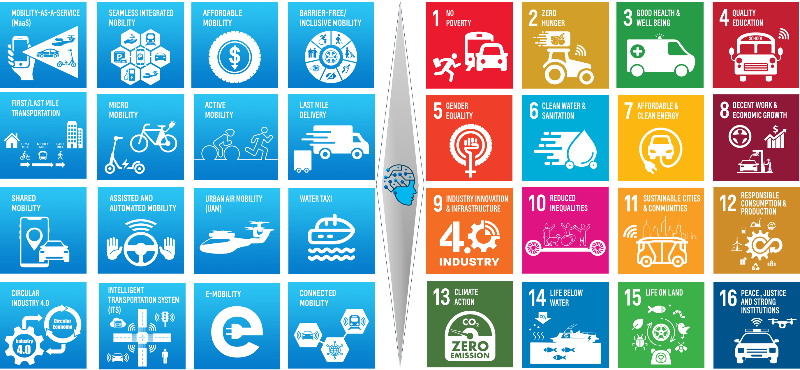

AI for Smart Mobility
Smart mobility is a wide umbrella for different systems and services to meet various end-user needs without compromising the collective good of the society and the environment. These systems and services are built on advanced technologies such as artificial intelligence, connectivity, and electrification, alongside innovative business models like digital economy, servitization, sharing economy, gig economy, experience economy, and circular economy.

The future of mobility is people-centric, software-defined, connected, and electric. Our mission is to advance transformative innovations that prioritize user experience, enhance connectivity, and drive sustainable electrification. By integrating cutting-edge research with interdisciplinary collaboration, we aim to create mobility solutions that empower individuals, foster global connectivity, and contribute to a cleaner, smarter, and more inclusive world.
AI for Smart Mobility (AI4SM) Lab is part of The Interdisciplinary Research Center for Smart Mobility and Logistics at KFUPM. Our research focuses on the intersection of AI and mobility systems, services and business models. Our research addresses a wide range of problems, including seamless integrated mobility, SDV observability, combining reasoning and action, contextual causal inference, and design, planning, and control problems related to people mobility, logistics, and transportation infrastructure. Check Research page for active research projects in our lab.